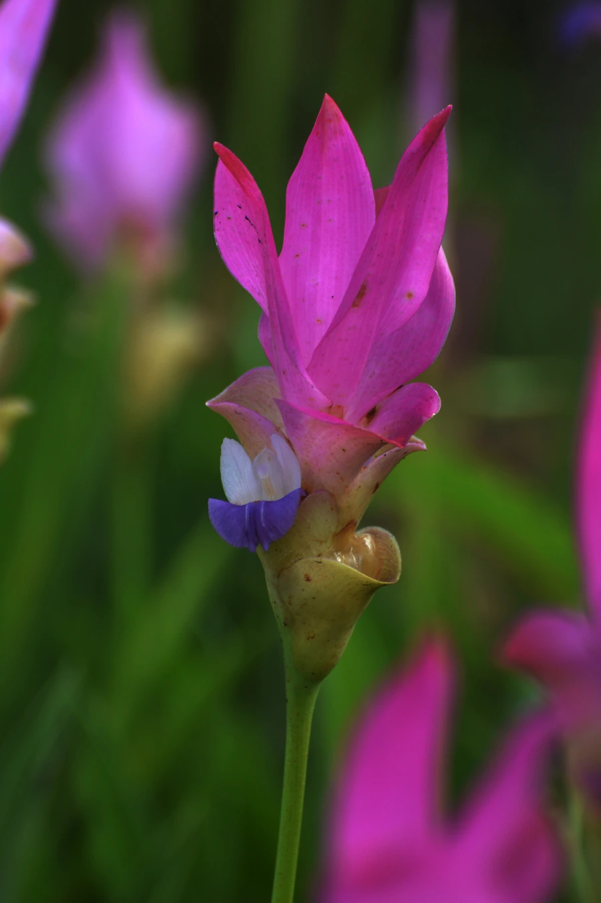

花卉与草本 · 植物界
姜荷花 Curcuma alismatifolia

姜科姜黄属多年生草本，穗状花序顶端苞片粉红如莲瓣，下部苞片绿色，形似荷花，是热带切花与庭园新宠。
- 分类
- 门被子植物门纲木兰纲目姜目科姜科属姜黄属
- 栖息环境
- 东南亚热带季风林缘，喜温暖湿润、阳光充足
- 地理分布
- 原产泰国、老挝、柬埔寨；中国华南、云南南部引种栽培
- 保护级别
- IUCN 暂无评估；野生种群受栖息地开垦影响，栽培广泛
物种志
姜荷花为多年生草本，高 30–80 厘米，具肉质根状茎。叶片长椭圆形至披针形，长 20–40 厘米，具平行脉，叶面深绿色。穗状花序顶生，长 20–30 厘米，上部苞片粉红色、形似莲花瓣，下部苞片绿色、内含真正的花；花小，紫色，藏于绿色苞片内。
本种原产泰国、老挝、柬埔寨等地，喜温暖湿润、阳光充足的环境，在中国华南、云南南部常作切花与庭园栽培。它因花序形似荷花而得名“姜荷花”，其实与荷花没有亲缘关系，而是姜科植物。姜荷花花期长、瓶插寿命久，是近年来流行的新兴切花；其根状茎可提取芳香油。它不耐寒，北方需盆栽温室越冬，冬季地上部分枯萎后以根茎休眠。
形态与习性
- 株高30–80 厘米，具肉质根状茎
- 花期6–10 月，上部苞片粉红色
- 花序长 20–30 厘米，形似荷花
- 光照喜光，每天需充足直射光
- 水分喜湿润，生长期需充足浇水
- 土壤疏松肥沃、排水良好的沙质壤土
- 主要用途切花、盆栽与庭园观赏
趣味知识
- 姜荷花粉红色的“花瓣”其实是苞片，真正的花是藏在绿色苞片里的紫色小花。
- 它名字里有“荷花”，却与荷花没有亲缘关系，而是姜科植物。
- 姜荷花原产泰国，是近年来国际切花市场的新兴明星。
- 它的根状茎可提取芳香油，与姜黄、郁金是近亲。